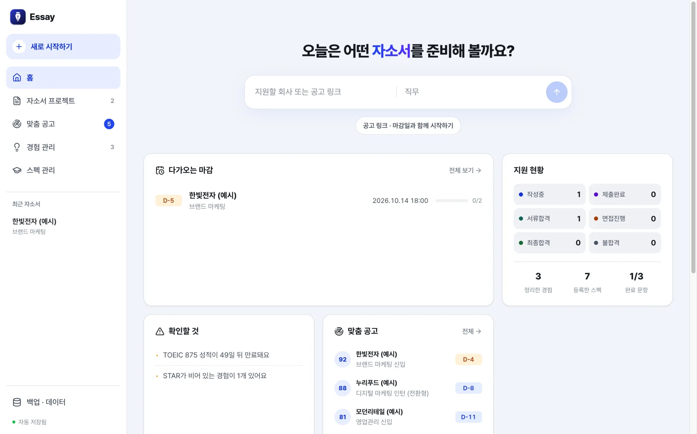
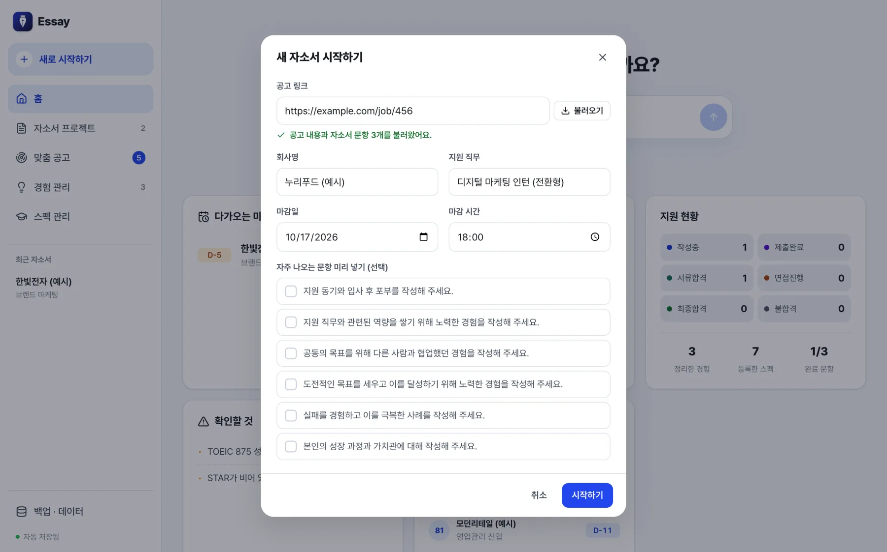
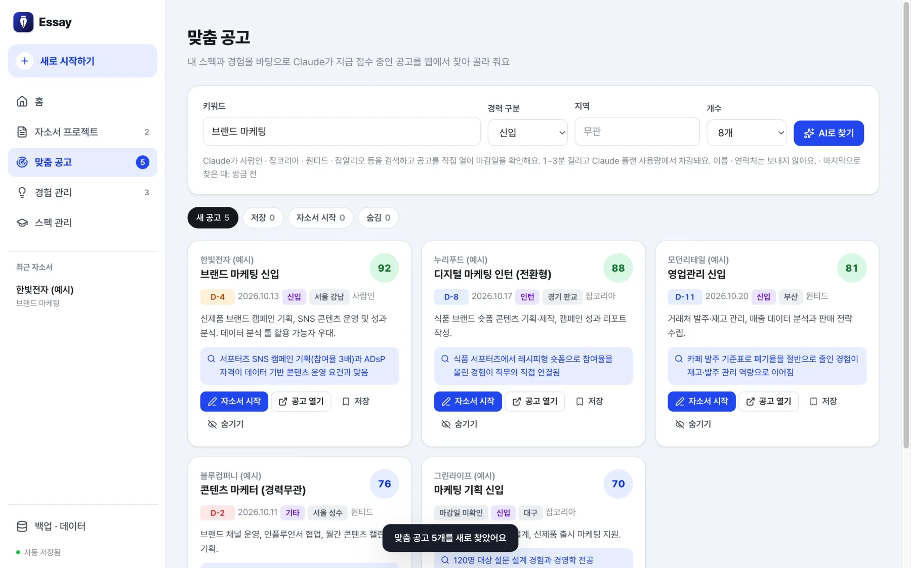
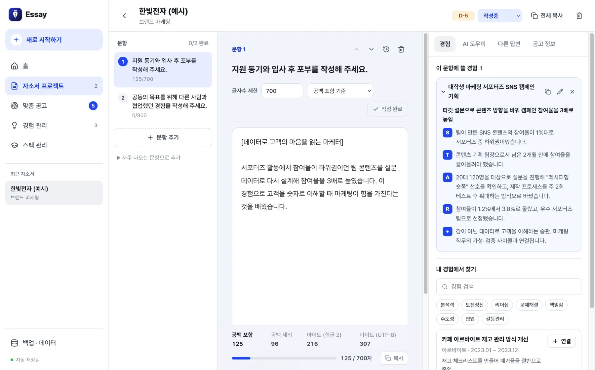
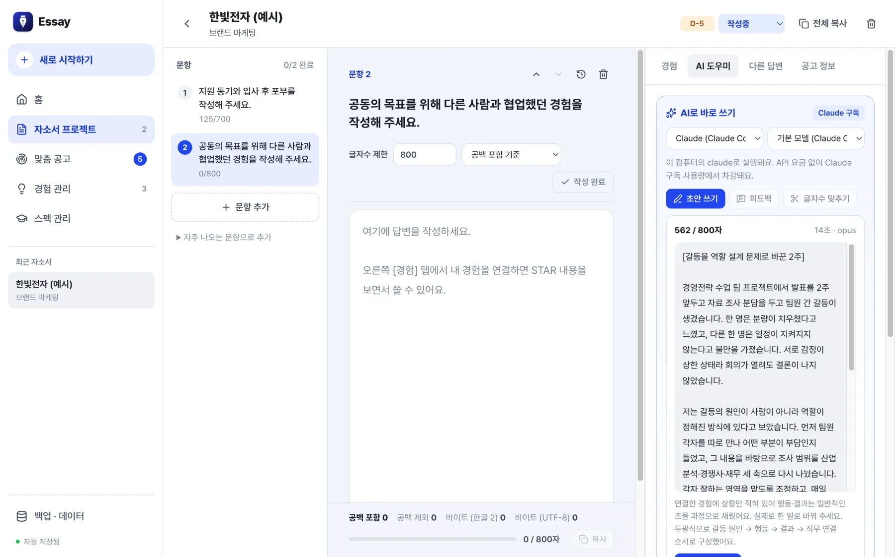
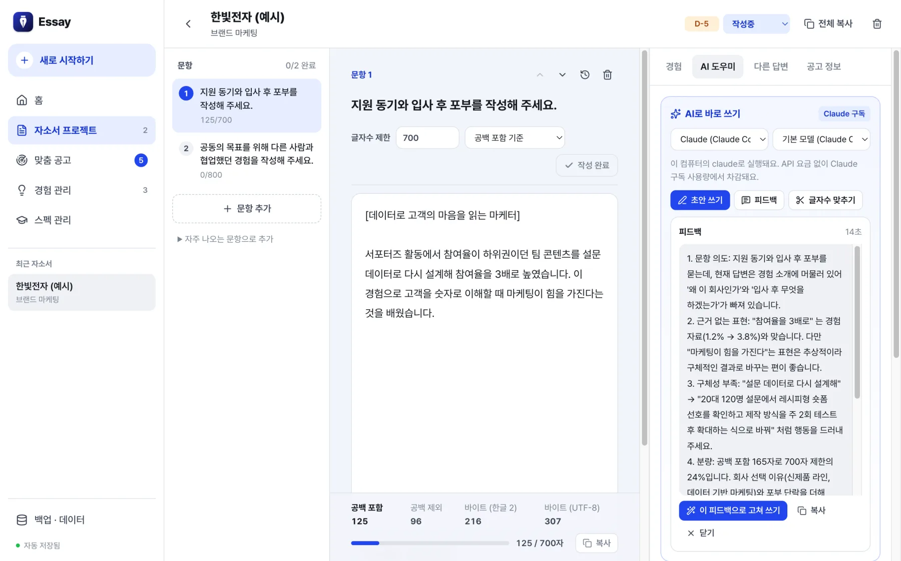
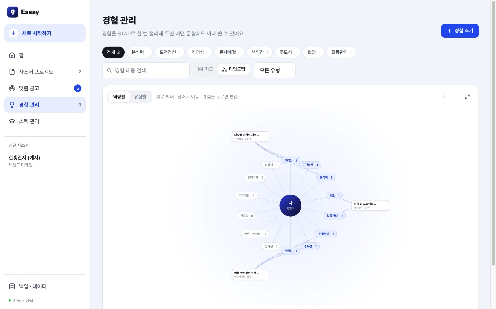
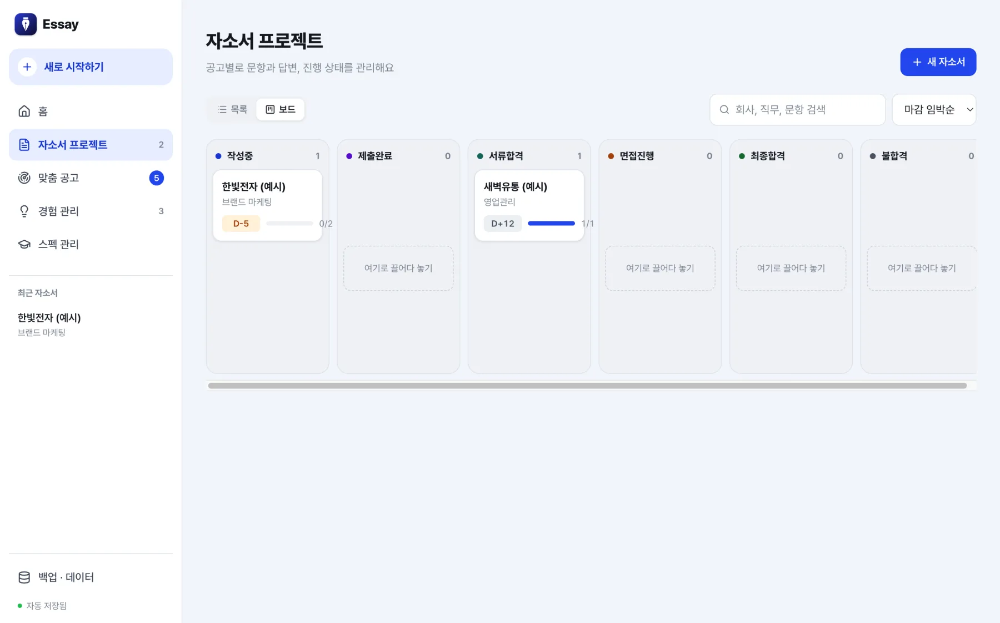
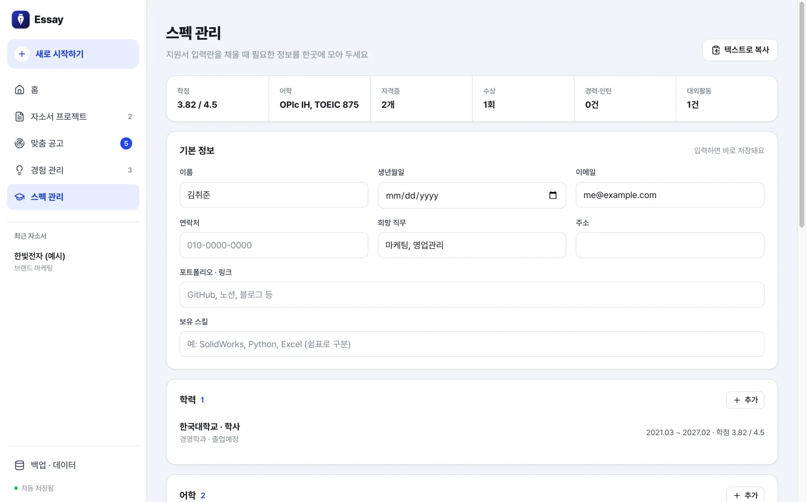
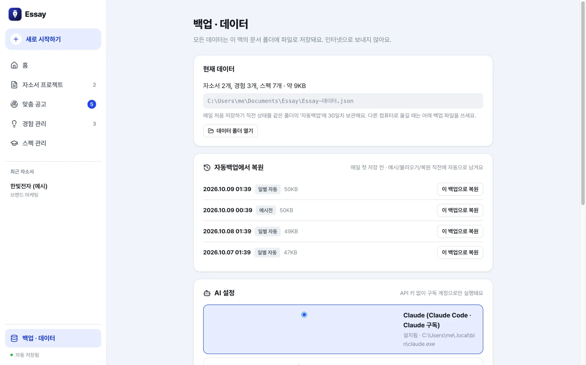

Windows 데스크톱 앱 · 무료 · 유료 API 없음
Essay는 자기소개서 · 경험 · 스펙을 한곳에서 관리하는 데스크톱 앱입니다. 공고 링크를 붙여넣으면 문항까지 채우고, 정리해 둔 내 경험으로 초안을 쓰고, 마감을 대신 챙깁니다. 데이터는 내 PC에만 저장되고, AI는 이미 쓰고 있는 Claude · Gemini 구독으로 돌아갑니다.
설치 파일을 준비하고 있어요. 곧 이 버튼으로 바로 받을 수 있습니다.

기능
티오(TIO) 같은 자소서 관리 서비스의 구성을 바탕으로, 혼자 취업 준비할 때 매번 손으로 하던 일을 앱이 대신하도록 만들었습니다. 아래 화면은 모두 앱에 들어 있는 예시 데이터입니다.
01 · 공고 링크 불러오기
사람인 · 잡코리아 · 원티드 · 캐치 등 공고 주소를 붙여넣으면 회사 · 직무 · 마감일 · 공고 내용 · 자소서 문항을 자동으로 읽어 옵니다.

02 · 맞춤 공고
정리해 둔 스펙과 경험을 바탕으로 지금 접수 중인 공고를 웹에서 검색하고, 매칭 점수와 이유를 붙여 보여 줍니다.

03 · 자소서 편집기
문항마다 글자수 제한을 두고 공백 포함 · 공백 제외 · 바이트(한글 2) · UTF-8 네 기준을 동시에 봅니다. 초과하면 바로 표시됩니다.

04 · AI 도우미
문항 · 공고 메모 · 연결한 경험 · 스펙만 가지고 초안을 쓰고, 인사 담당자 시점의 피드백을 받고, 그 피드백으로 다시 고쳐 씁니다. 글자수 맞추기도 한 번에.


05 · 경험 관리 · 마인드맵
STAR + 배운 점 + 역량 태그로 경험을 정리하고, 어떤 자소서 문항에 썼는지 추적합니다.

06 · 지원 현황 · 마감 알림
작성중 → 제출완료 → 서류합격 → 면접진행 → 최종합격까지, 보드에서 카드를 끌어다 놓아 상태를 바꿉니다.

07 · 스펙 관리
학력 · 어학 · 자격증 · 수상 · 경력 · 대외활동 · 교육 이수를 정리해 두고, 지원서를 쓸 때 텍스트로 복사해 붙여넣습니다.

08 · 내 PC에만 저장 · 자동 백업
모든 데이터는 문서\Essay\Essay-데이터.json 파일 하나에 저장됩니다. 계정도, 서버도 없습니다.

AI · 요금
Essay는 AI 회사의 API에 직접 접속하지 않습니다. 대신 컴퓨터에 설치된 공식 CLI를 로그인된 구독 세션으로 실행합니다. API 키 환경변수는 넘기지 않아 종량제 요금이 나갈 수 없고, 사용량은 이미 내고 있는 구독에서만 차감됩니다. 둘 중 가지고 있는 쪽을 앱의 백업 · 데이터 → AI 설정에서 고르면 됩니다.
| Claude | Gemini | |
|---|---|---|
| 실행하는 CLI | Claude Code (claude) | Antigravity CLI (agy) |
| 필요한 구독 | Claude Pro · Max | Google AI Pro · Ultra (무료 계정도 한도 안에서 가능) |
| 설치 (PowerShell) | irm https://claude.ai/install.ps1 | iex | irm https://antigravity.google/cli/install.ps1 | iex |
| 로그인 | claude auth login --claudeai | agy 실행 → 브라우저에서 Google 로그인 |
| 웹 기능 (맞춤 공고 · 공고 불러오기) | 바로 사용 | AI 설정에서 [웹 읽기 권한 허용] 한 번 |
AI는 빈 임시 폴더에서, 글쓰기는 도구를 끈 채, 웹 기능은 검색과 페이지 읽기만 허용한 채 실행됩니다.
요청문에는 문항 · 공고 메모 · 연결한 경험 · 스펙 요약만 들어갑니다. 이름 · 연락처 · 주소는 넣지 않습니다.
CLI를 설치하지 않으면 AI 버튼만 비활성화됩니다. 요청문을 복사해 쓰던 AI 채팅에 붙여넣는 방식도 그대로 있습니다.
설치
위의 [Windows용 다운로드]로 Essay-Setup-<버전>.exe를 받아 실행하면 설치 폴더를 고를 수 있고 바탕화면과 시작 메뉴에 바로가기가 생깁니다.
코드 서명이 없는 개인 배포 앱이라 처음 실행할 때 Windows SmartScreen 창이 뜰 수 있습니다. 추가 정보 → 실행을 누르면 됩니다.
홈의 [예시 데이터로 둘러보기]를 누르면 가상의 자소서 · 경험 · 스펙이 들어옵니다. 다 보고 나면 백업 · 데이터에서 전체 삭제하고 내 것을 넣으면 됩니다.
PowerShell을 열고 가지고 있는 구독 쪽 명령을 실행합니다.
# Claude 구독이 있을 때
irm https://claude.ai/install.ps1 | iex
claude auth login --claudeai
# Google AI(Gemini) 구독이 있을 때
irm https://antigravity.google/cli/install.ps1 | iex
agy그다음 Essay의 백업 · 데이터 → AI 설정에서 Claude 또는 Gemini를 고릅니다. "설치됨"으로 바뀌면 끝입니다. Gemini는 [웹 읽기 권한 허용]을 한 번 눌러야 맞춤 공고 · 공고 불러오기가 됩니다.
문서\Essay 폴더에 저장됩니다. 설치 경로가 특이해서 CLI를 못 찾으면 환경변수 ESSAY_CLAUDE_PATH / ESSAY_AGY_PATH에 실행 파일 전체 경로를 넣으면 됩니다.
FAQ
앱은 무료이고, AI는 이미 쓰고 있는 Claude 또는 Google AI 구독 사용량에서만 차감됩니다. API 키를 입력받는 곳이 없고, 실행할 때 API 키 환경변수도 넘기지 않습니다. 구독이 없으면 AI 버튼만 비활성화되고 나머지는 전부 동작합니다.
아니요. 데이터는 내 PC의 파일 한 개에만 저장됩니다. 인터넷으로 나가는 것은 AI 버튼을 눌렀을 때의 요청문뿐이고, 거기에도 이름 · 연락처 · 주소는 들어가지 않습니다. 공고 메모에 수험번호처럼 남에게 보이기 싫은 내용을 적어 두었다면 그 부분은 요청문에 포함되니 다른 곳에 적어 두세요.
요청문에 "자료에 없는 사실 · 수치 · 회사 정보는 지어내지 말고 꼭 필요하면 (확인 필요)로 표시"하도록 넣어 두었고, 제출 전 검사가 남아 있는 (확인 필요) 표시를 잡아 줍니다. 그래도 AI가 쓴 글은 반드시 직접 읽고 고쳐야 합니다. 초안은 초안입니다.
AI가 사람인 · 잡코리아 · 원티드 · 잡알리오 등을 검색하고 공고를 직접 열어 마감일을 확인하기 때문에 1~3분 걸립니다. 그동안 다른 화면으로 이동해도 계속 진행됩니다.
국내 지원 사이트 대부분이 쓰는 기준으로 한글 2바이트, 영문 · 공백 · 줄바꿈 1바이트입니다. 'UTF-8'은 한글 3바이트입니다. 지원 사이트 안내에 맞춰 문항마다 고르면 됩니다.
지금 배포하는 설치 파일은 Windows용입니다. 맥 버전은 요청이 있으면 올릴 예정이니 아래 메일로 알려 주세요.
hyilkimm@gmail.com으로 보내 주세요. 어떤 화면에서 무엇을 했는지 적어 주시면 빨리 고칠 수 있습니다.